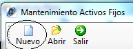
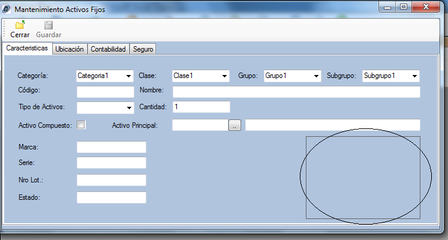
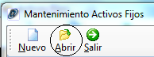
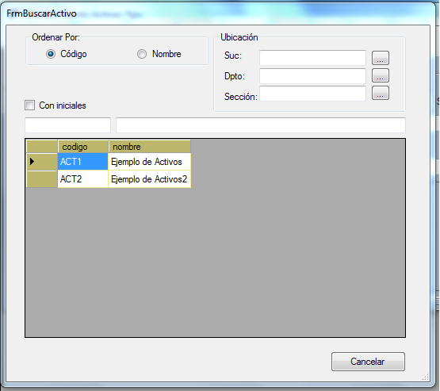
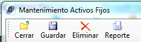
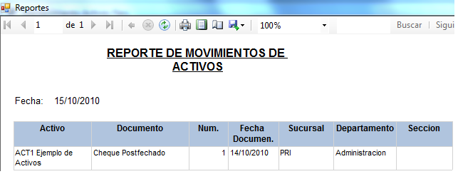

Nuevo:

Figura20
Esta opción nos permite ingresar un nuevo activo, al hacer clic en el botón nuevo se habilitarán las siguientes opciones:
· Características: Aquí se detallan las diferentes características del activo como por ejemplo el código , el nombre, tipo de activo, cantidad, etc. Al hacer doble clic en el recuadro de la parte inferior derecha de la pantalla se le permitirá al usuario ingresar una imagen del activo (Figura21).

Figura21
· Ubicación: En esta opción se debe ingresar la ubicación del activo, el centro de costos, la persona responsable por el mismo, y los datos de los documentos de ingreso y salida del activo
· Contabilidad: Aquí debe ingresarse los costos, moneda, la clase de depreciación del activo y los indicativos contables.
· Seguro: Si el activo tiene seguro entonces aquí se deben ingresar los datos de la aseguradora, número de contrato fechas montos, etc.
Abrir:

Fiugura22
Al hacer clic en este botón se desplegará un cuadro de dialogo (Figura23) que permite al usuario buscar un activo por código, nombre y ubicación. Al hacer doble clic sobre el activo requerido se desplegarán los detalles del mismo en la ventana de mantenimiento de activos para que se pueda modificar o eliminar el activo seleccionado.

Figura23
Guardar/Eliminar/Reporte:

Figura24
Cuando se crea un nuevo activo este botón guarda las características del activo ingresado y cuando se abre un activo existente el botón guardar actualiza los datos que el usuario haya modificado.
Eliminar:
Está opción se presenta cuando se abre un activo existente, al hacer clic en este botón el activo se eliminará permanentemente, por lo cual antes de realizar esta acción se desplegará un cuadro de dialogo pidiendo la confirmación de la eliminación del activo.
Reporte:
Está opción se presenta cuando se abre un activo existente, al hacer clic en este botón se presentará un reporte del activo seleccionado(Figura25)

Figura25